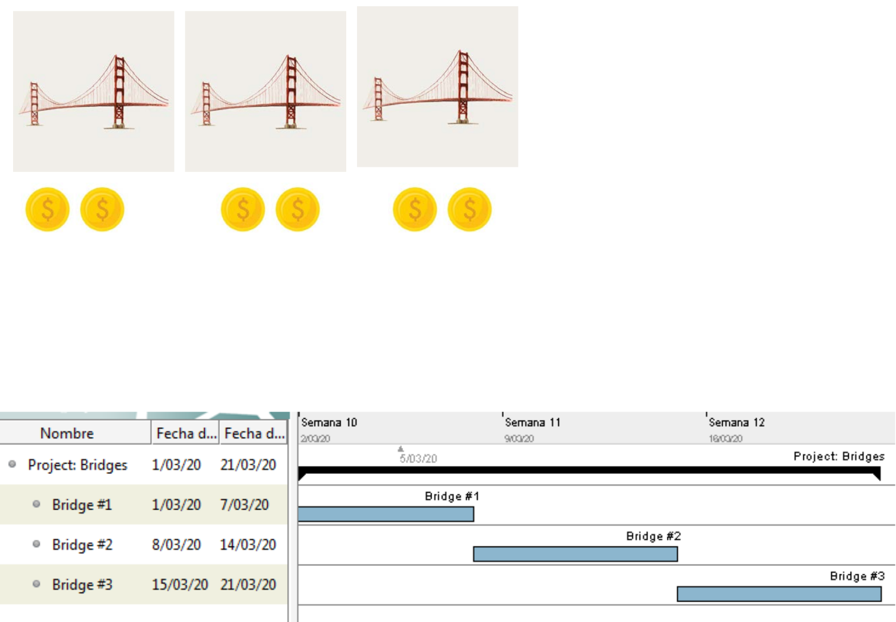
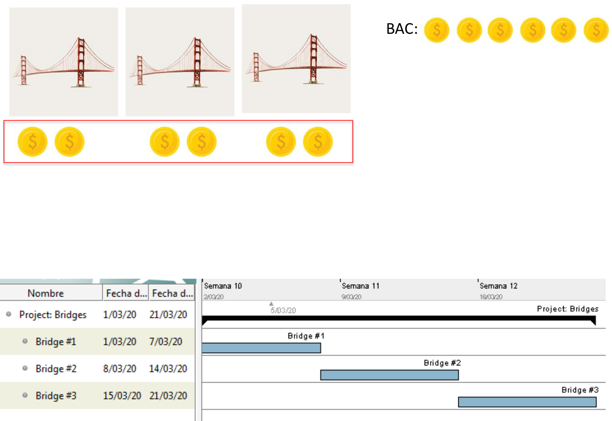
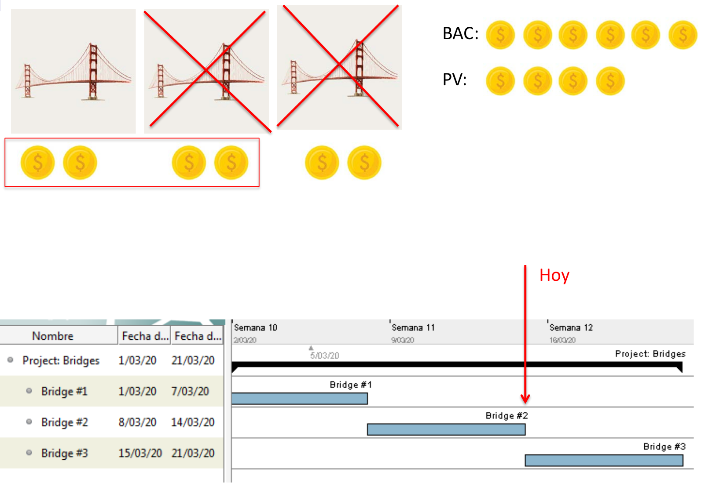
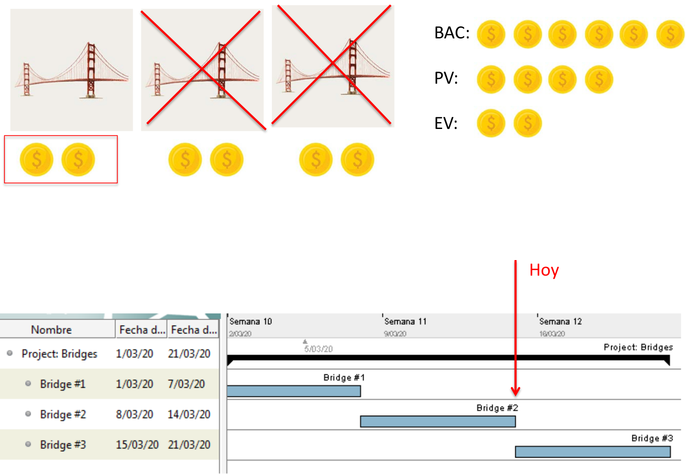
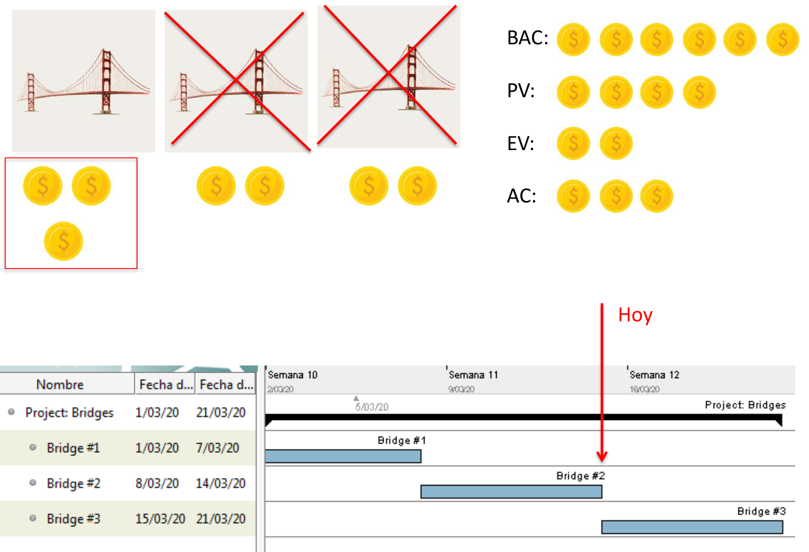
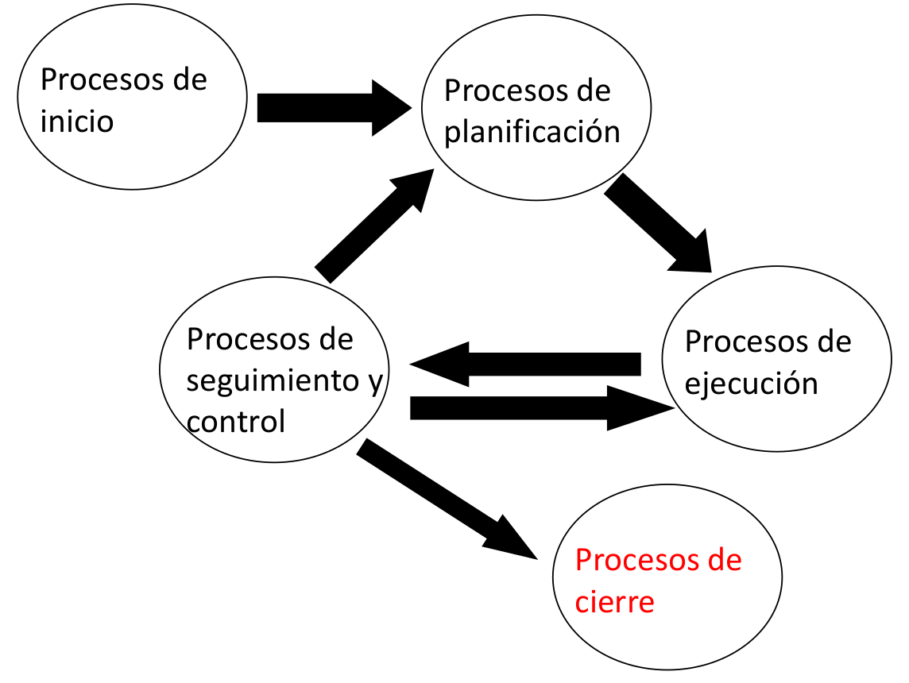

Gestión de Proyectos (GP)
Seguimiento y control
Mikel Egaña Aranguren (mikel.egana@ehu.eus)

Mikel Egaña Aranguren
Mikel Egaña Aranguren (mikel.egana@ehu.eus)

https://github.com/mikel-egana-aranguren/EHU-GP-01


¿Qué debemos hacer para volver donde deberíamos estar?
Cuando encontremos un problema no podemos realizar cambios directamente:
Antes de hacer el cambio hay que analizar el impacto que éste tendrá en las restricciones del proyecto - tiempo, coste, alcance, recursos, riesgos y calidad - y tras el análisis determinar si merece la pena hacer el cambio o no

| Concepto | Descripción | Fórmula |
|---|---|---|
| BAC: Budget At Completion | Cuánto dinero se gastará en total en la tarea/proyecto (Presupuesto) | --- |
| PV: Planned Value | Lo que debería haber gastado hasta este momento según la planificación temporal | PV = BAC * %hecho según planificación temporal |
| Concepto | Descripción | Fórmula |
|---|---|---|
| EV: Earned Value | Lo que debería haber gastado hasta este momento según el % de trabajo real realizado | EV = BAC * %trabajo real realizado |
| AC: Actual Cost | Lo que se ha gastado en realidad hasta ese momento | --- |
| Concepto | Descripción | Fórmula |
|---|---|---|
| SPI: Schedule Performance Index | Para saber si vas adelantado o retrasado en el tiempo | SPI = EV/PV (<1: retrasado; >1: adelantado; =1: como dice la planificación) |
| CPI: Cost Performance Index | Para saber si estás dentro de presupuesto o no | CPI = EV/AC (<1: no estás dentro >=1: estás dentro) |
| Concepto | Descripción | Fórmula |
|---|---|---|
| TCPI: To-complete Performance Index | CPI que debes lograr a partir de ahora para estar dentro de presupuesto | TCPI = (BAC-EV)/(BAC-AC) |





Ejercicio en eGela
